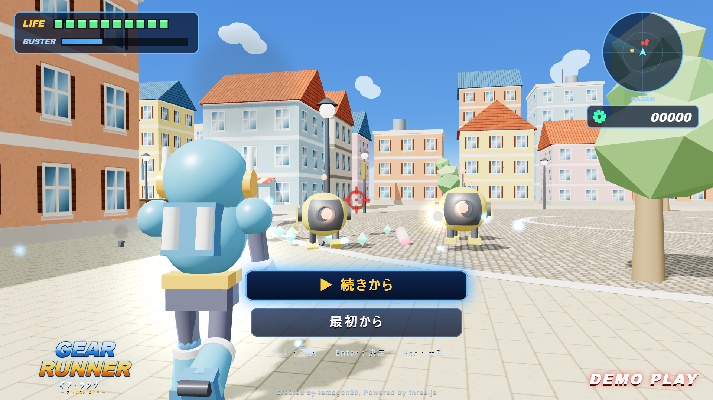
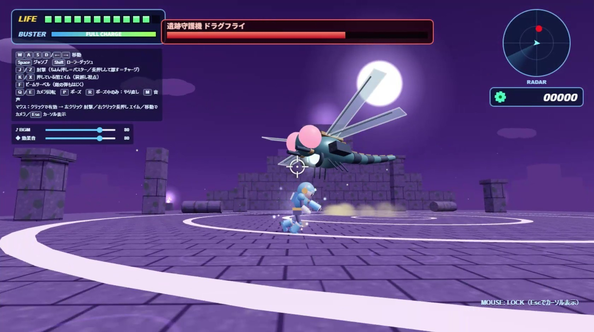
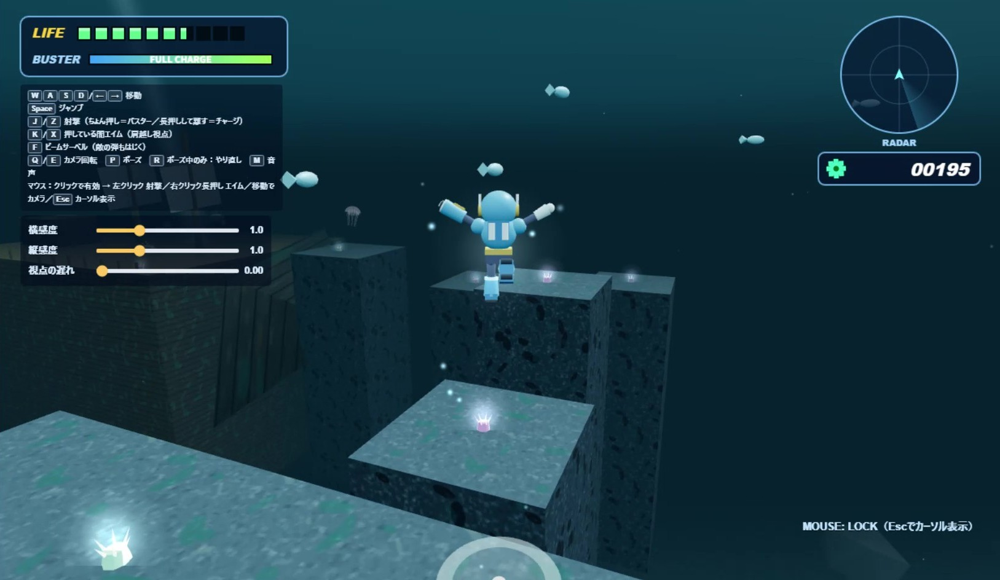
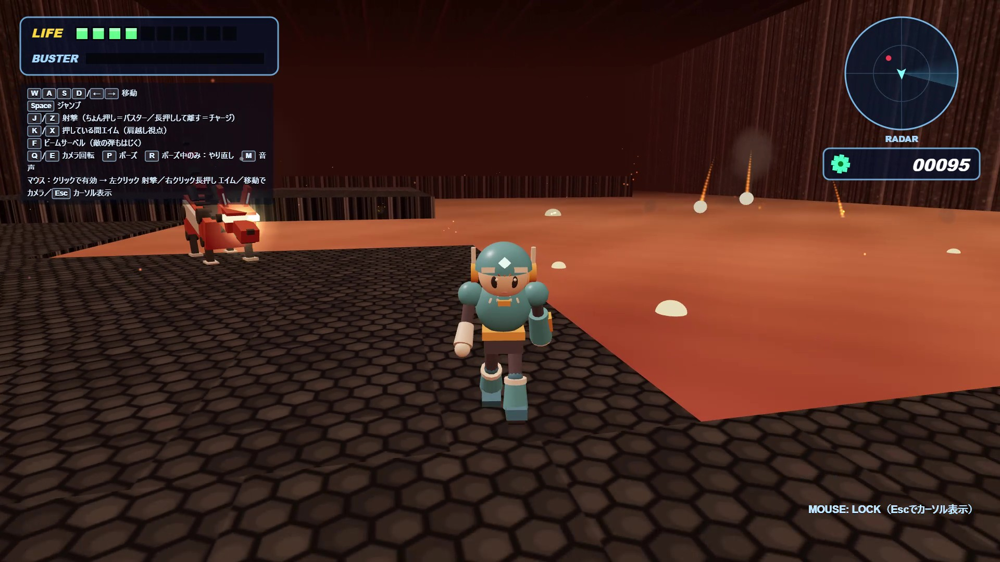
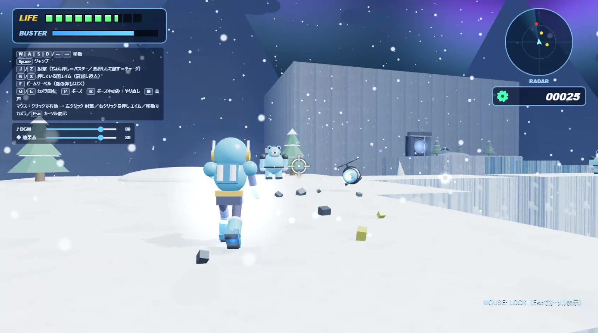
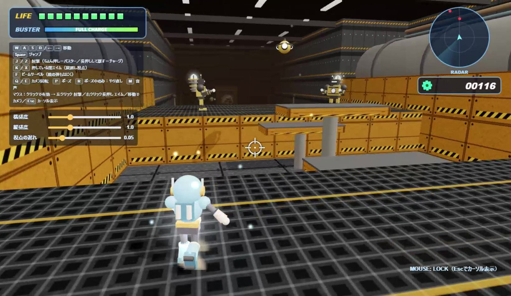
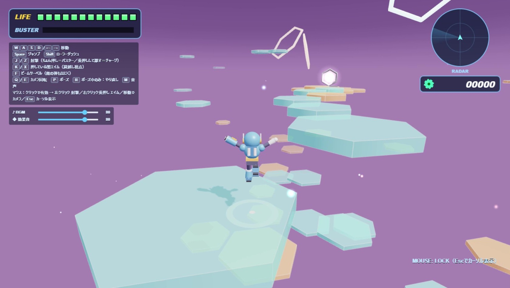
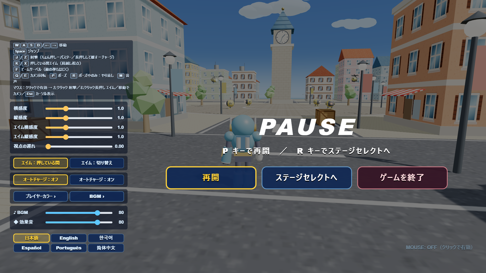
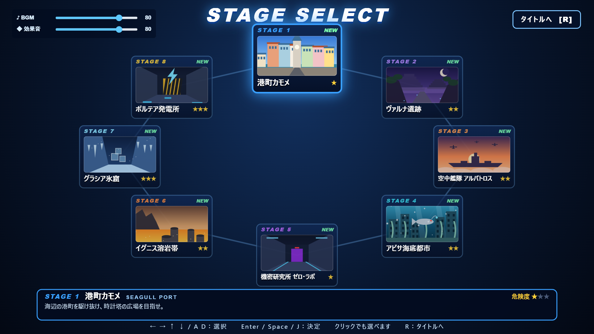

紹介動画
プレイ画像
クリックで拡大できます。









ゲーム概要
バスターで敵を撃ち抜き、ステージを駆け抜ける3Dアクションシューティング。傭兵ロボットとして、各地で反乱を起こしている産業ロボットを制圧してください。港町、遺跡、海底都市、空中艦隊、溶岩帯、氷窟、発電所と、8つの個性的なステージを自由に選んで挑戦できます。ステージの最後にはボスが待ち受けています。
プログラムはすべて Claude Opus 5.5 と Claude Sonnet 5.5 で作りました。three.js を利用しています。BGM の一部には、AI 音楽生成サービス Suno AI で生成した音楽を使用しています。日本一BGMというサイトの音楽も利用しています。
特徴
- 全8ステージ。ステージセレクトから好きな順に挑戦
- バスターの押し分け(通常弾/チャージ弾)、肩越しエイム、ビームサーベルで敵弾をはじく
- レーダー表示、感度調整、6言語対応(日本語/English/한국어/Español/Português/简体中文)
- Xboxのコントローラーに対応しています。他のコントローラーは動作確認していません。
操作方法
| 移動 | W A S D / 矢印キー |
|---|---|
| ジャンプ | Space |
| 射撃 | マウス左クリック、または J / Z キー(ちょん押し=バスター、長押しして離す=チャージ) |
| エイム | マウス右クリック長押し、または K / X キー(肩越し視点) |
| 視点移動 | マウス移動、または Q / E キー(カメラ回転) |
| ビームサーベル | F(敵の弾もはじく) |
| ポーズ | P(ポーズ中に R でステージセレクトへ) |
| マウス操作の開始 | 画面をクリックして有効化、Esc でカーソル表示 |
ダウンロード
バージョン v0.1.4 ／ 更新日 2026-11-25 ／ 無料
動作環境
| OS | Windows 11(動作確認済み) |
|---|---|
| CPU | AMD Ryzen 5 7530U(Radeon Graphics 内蔵)で動作確認済み |
| メモリ | 16GB 推奨 |
| ストレージ | 約 46 MB(展開後) |
インストール・起動方法
- zip を任意の場所に展開します(
gear_runner.exeとReadMe.txtが入っています)。 gear_runner.exeを実行します。- Windows で「PCが保護されました」と表示された場合は、「詳細情報」→「実行」を選んでください(個人開発でデジタル署名がないため、警告が表示されます)。
他のサイトでも公開中
夢現、ふりーむ、itch.io、Plicy などにも公開しています。気になった人は探してみてください。ブラウザ版(タッチ操作対応)とダウンロード版(Windows)があります。